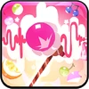

Toppings:


En una época en la que nunca hay un día sin un nuevo ídolo famoso, ¡esta cantautora Cookie intenta desesperadamente destacar con aderezos
dulces en colores vivos! El estilo distintivo de Parfait Cookie incluye capas de chocolate y dulces, cubiertas con almíbar. A pesar de ser
todavía un novato, este Cookie ya cuenta con decenas de canciones escritas por él mismo. Las melodías de Parfait Cookie pueden ser tan
creativas y únicas como su colorida mezcla de aderezos
"¡Bonitas coberturas, dulces y encantadoras! Soy Parfait Cookie, ¡y no lo olvides!"
Esta piedra contiene un pedazo del alma de Parfait Cookie. Si escuchas su melodía, es posible que puedas escuchar su voz genuina.


Con una melodía más dulce y sincera, Parfait Cookie levanta el ánimo de sus aliados. ¡Al usar su habilidad, otorga el Paru-paru-parfait!
Mejora y inmunidad a las desventajas para ella y la galleta con el ATK más alto. Cuando Galletas con el Paru-paru-parfait! Si el
beneficio recibe una curación que excede su HP máximo, el excedente se convertirá en un escudo de HP.